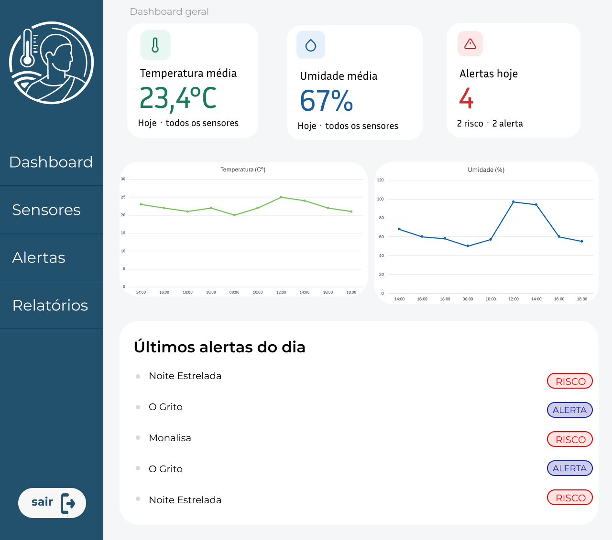

A Thermus nasce para

Quem somos nós
A Thermus nasce para
Mais do que evitar prejuízos, nossa proposta é:
Qual a Importância?

O orvalho gera umidade em superfícies, favorecendo fungos, mofo e oxidação..

A umidade causa expansão e contração, levando a deformações e craquelamento.

Esses efeitos resultam na deterioração permanente das obras, tornando essencial a prevenção.
Nossa solução oferece uma visualização clara e intuitiva por meio de gráficos detalhados, permitindo o monitoramento em tempo real de uma ou mais seções do acervo. Com essa funciona classade, o cliente pode acompanhar as variações climáticas de setores específicos ou de todo o museu simultaneamente, facilitando a classentificação de áreas críticas e garantindo uma gestão de preservação baseada em dados precisos.

Planejamento e Economia:
Sua Calculadora Thermus
Estimativa clara do investimento necessário em sensores e infraestrutura, comparando-o aos altos custos médios de restauração de obras de arte. O Thermus protege não apenas o seu acervo, mas também o orçamento da sua instituição contra gastos emergenciais e danos permanentes.